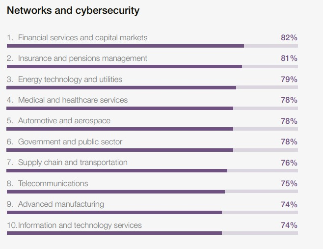
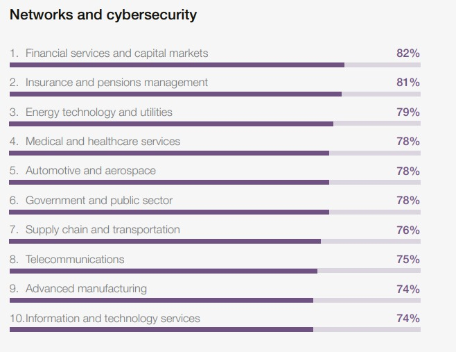
 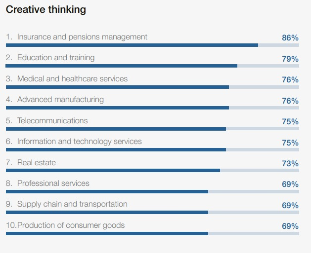
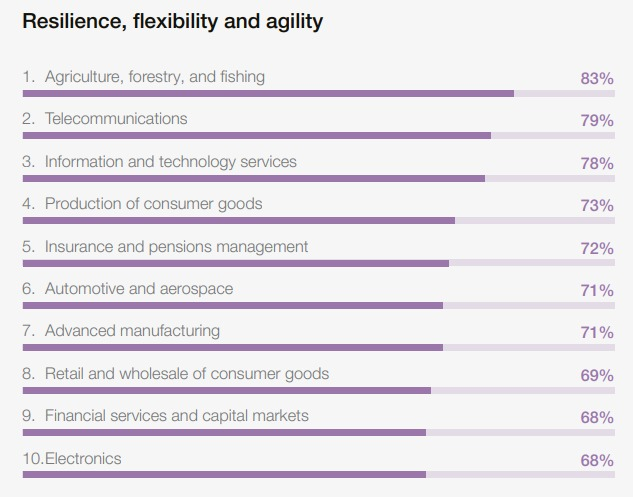
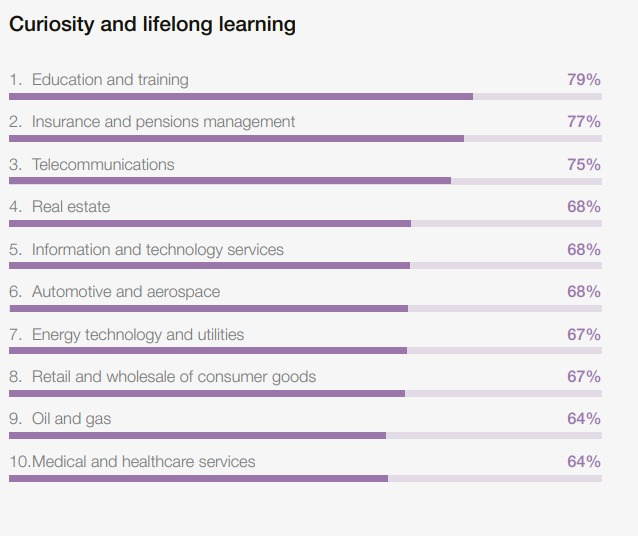
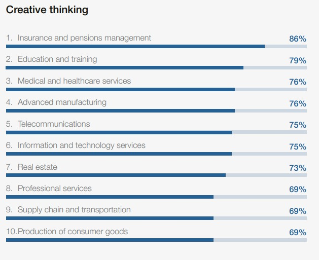
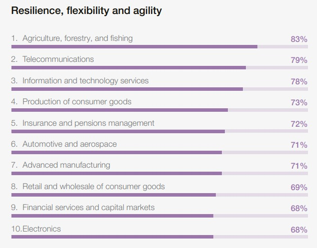
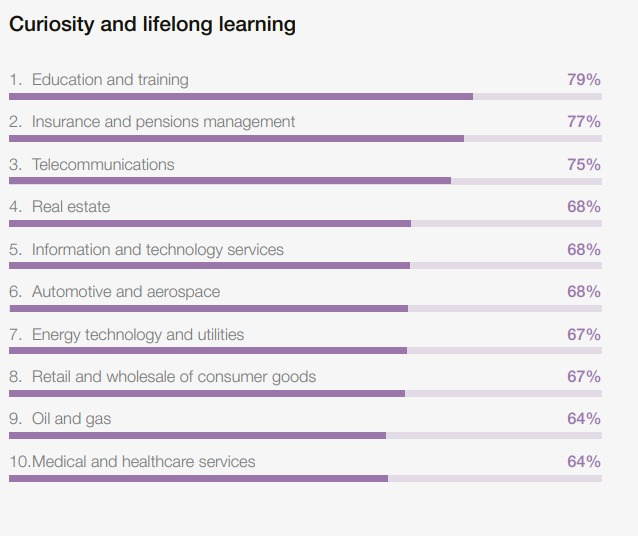
 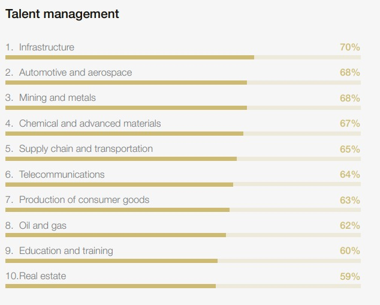
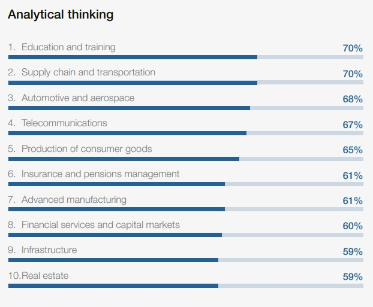
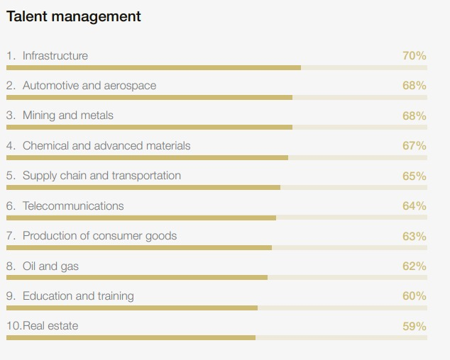
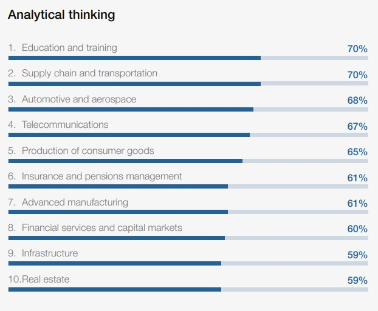
78 million new job opportunities will increase by 2030
Need urgent upskilling to prepare workforces
It displaces 92 million other people who are currently working
22% of the workers skills are expected to become outdated by 2030
170 million new roles are set to be created
A collected data from over 1000 companies, the reports find that the skill gap would be the barrier for business transformation.
40% of the skill required for the new emerging jobs by 2030.
63% of employees already say that it would be a problamatic situation that they will face.
If there are 100 people, 59 people are require to reskill or upskill by 2030
| Top 10 Fastest growing jobs by 2030 | Big Data specialists | FinTech engineers | AI and ML specialists | Software and application developers | Security management specialists | Data Warehousing specialists | Autonomous and electric vehicle specialists | UI and UX designers | Light truck or delivery services drivers | Internet of things specialists |
|---|
| Top 10 Fastest growing skills by 2030 | AI and Big data | Networks and cybersecurity | Technological literacy | Creative thinking | Resilience, flexibility, and agility | Curiosity and lifelong learning | Leadership and social influence | Talent management | Analytical thinking | Environmental stewardship |
|---|
| Largest Growing Jobs By 2030 | Largest Declining Jobs by 2020 |
|---|---|
| Farmworkers, labourers and other agricultural workers | Cashier and ticket clerks |
| Light truck or delivery service drivers | Administrative assistants and executive secretaries |
| Software and application developers | Building caretakers, cleaners and housekeepers |
| Building framers, finishers and related trade workers | Material-recording and stock-keeping clerks |
| Shop salesperson | Printing and related trade workers |
| Food processing and related trade workers | Accounting , bookkeeping and payroll clerks |
| Car,van and motorcycle drivers | Accountants and auditors |
| Nursing professionals | Transportation attendants and conductors |
| Food and beverage serving workers | Security guards |
| General and operations managers | Bank tellers and related clerks |
| Social work and counselling professionals | Data entry clerks |
| Project managers | Client information and customer service workers |
| University and higher education teachers | Graphic designers |
| Secondary education teachers | Business service and administration managers |
| Personal care aides | Claims adjusters, examiners, and investigators |
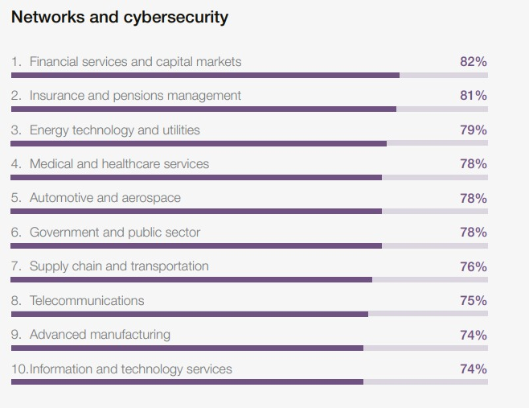
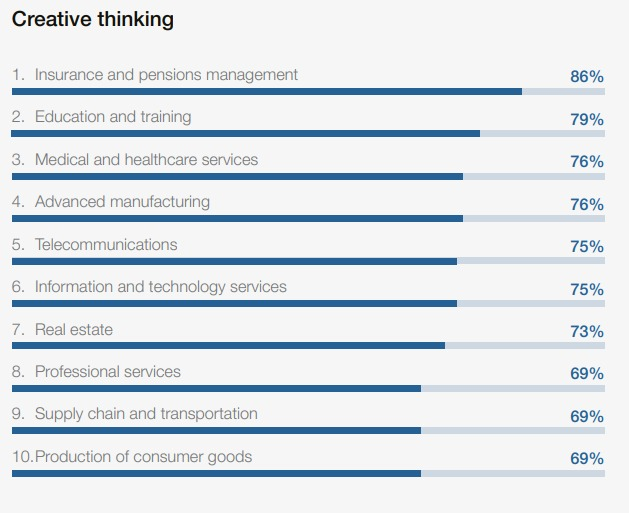
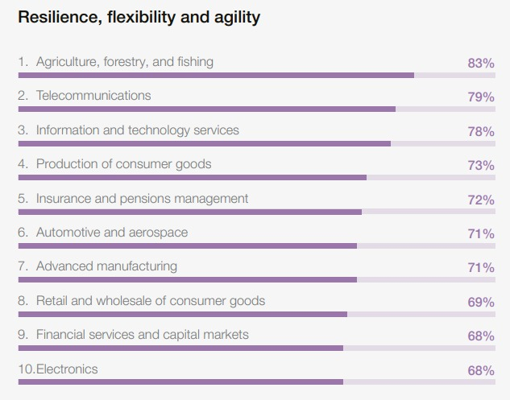
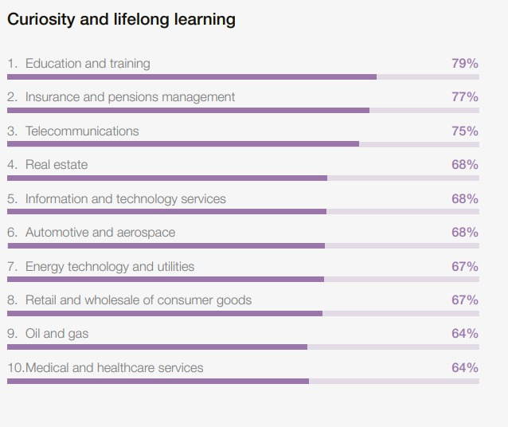
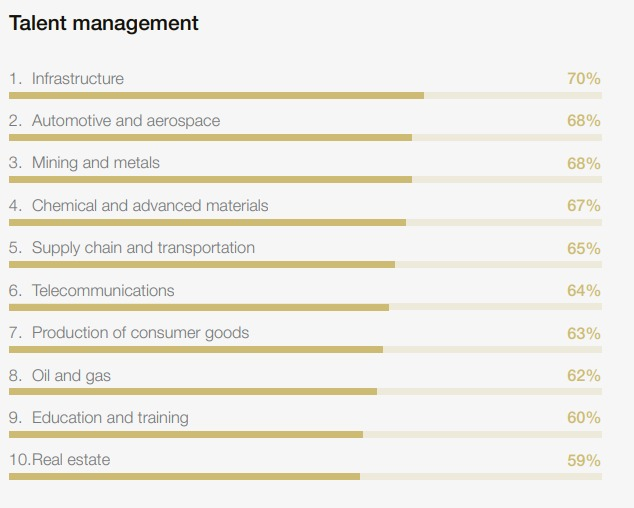
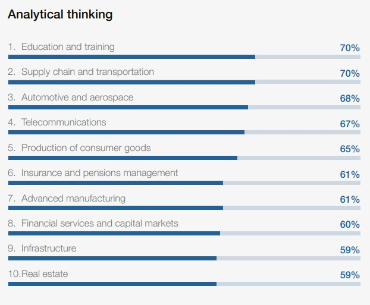
The global job market is anticipated to undergo significant transformations by 2030, driven by technological advancements, demographic shifts, and evolving economic landscapes. Ai is projected to play a pivotal role in job creation, with an estimated 170 million new positions emerging globally in the next five years. Proficiency in digital technology is becoming increasingly essential across various industries. Skills such as critical thinking, problem solving, creativity, and adaptability are highly valued. These competencies enable individuals to navigate complex work environments and drive technology.